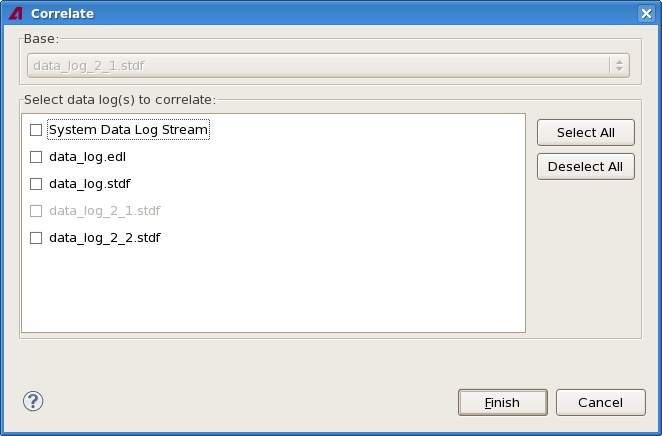
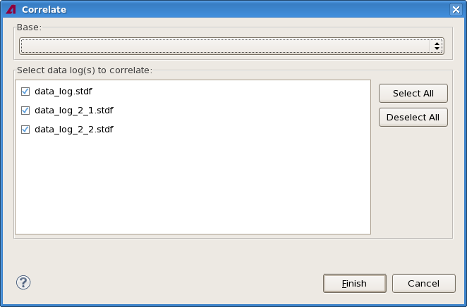

Correlating data logs
Correlating data logs - combining them to show the results for the same tests from different logs together - is performed through a shortcut menu command in the Data Log Explorer.
About this task
Correlate data logs when you want to compare test result statistics from different data logs or streams.
Before you begin
Make sure that all data log files you want to correlate are loaded into the Data Log Explorer.
Procedures
Standard procedure
- In the Data Log Explorer view, right-clicke of the data logs that you want to correlate
and choose Correlate from the shortcut menu. (You can also select
multiple files. This results in a slightly different procedure described in Correlating by
selecting multiple logs, below.)
The selected log is the base log; the correlation data store will contain all results from the base log as well as results for the same test from other logs, but not results for tests that the other logs contain but the base log does not.
The Correlate dialog opens:

The Select data log(s) to correlate list contains all loaded data logs and the system data log stream.
- Check all other data stores you want to correlate with the one that you clicked in step
1.
If you include the system data log stream in the correlation, the correlated store will be continually updated as new records appear on the stream.
- Click Finish.
Correlating by selecting multiple logs
Instead of first selecting the base log in the Data Log Explorer view and then the other logs to correlate with it in the Correlate dialog, you can also select all logs you want to correlate in the explorer.
The result of this correlation process is the same as with the standard procedure, only the beginning is different.
- In the Data Log Explorer view, select all data logs that you want to correlate.
- Right-clicke of the selected logs and choose Correlate from the
shortcut menu.
The Correlate dialog opens:

The Select data log(s) to correlate list contains all data logs selected in step 1.
- Select the desired base file from the Base list.
The list contains all selected files. The selected file is grayed out in the Select data log(s) to correlate list to indicate that it cannot be deselected.
- In the Select data log(s) to correlate list, select all files that you want to merge with the base file and deselect the others.
- Click Finish.
Results
SmarTest creates a new data store that combines the selected data stores and opens it. The format of the new data store is described in Correlation data store structure.
SmarTest also writes a correlation report to the console:
- In its first section, it lists all tests found found in the base data store (data log [A]),
with their test suites, test methods, test names, and test numbers.
For each additional correlated data store (data log [B] and so on), it lists:
- Tests found in these data stores that are not present in the base data store. These tests are indicated by a plus sign.
- Tests found in the base data store that are missing form the correlated data store. These
tests are indicated by a minus sign.
Tests from the base data store that are also present in the correlated data store are not listed again.
- The second section lists the hardware bins from all data store, using the same principles and notation as for the for the test list.
- The third section lists the software bins, again using the same notation and principles. The list includes the associated hardware bin for each software bin.
If the system data log stream is included in the correlation, the correlated data store is updated when new records appear on the stream.
Example
This sample report from the console describes the correlation of two data logs:
Test Summary Correlation Information:
Data log [A] summary information
TS=myTestSuite,TM=IDD,T=IDD1,TN=343500
TS=myOtherTS,TM=Die_Info,T=Die_X,TN=343600
Data log [B] summary information
+ TS=StdTS,TM=IO_v3,T=TPIO,TN=335700
- TS=myOtherTS,TM=Die_Info,T=Die_X,TN=343600
HW Bin Summary Correlation Information:
Data log [A] summary information
HB=1
HB=2
Data log [B] summary information
all data match 'A'
SW Bin Summary Correlation Information:
Data log [A] summary information
HB=1,SB=7
HB=1,SB=1078
HB=1,SB=1079
HB=2,SB=221
HB=2,SB=1002
Data log [B] summary information
- HB=2,SB=221How to read this report:
- The base data log (data log [A]) contains two test suites, named "myTestSuite" and
"myOtherTS". The first of these test suites uses the test method "IDD" and performs a test
named "IDD1" that has the number 343500.
Data log [B], the first correlated data log (and the only one in this case) contains an additional test suite, named "StdTS" but does not contain the "myOtherTS" test method. (Any test methods from data log A that are not mentioned in the summary of data log B re also present in data log B.
- Data log A contains two hardware bins, numbered 1 and 2.
Data log B contains exactly the same bins, not more and not fewer.
- Data log A contains five software bins. The first one is numbered 7 and is connected to
hardware bin 1.
Data log B contains all software bins from data log, except bin 221.
What to do next
Functional changes
- Introduced in SmarTest 7.2.0
- SmarTest 7.2.2: All files to correlate can now be selected before opening the dialog.
- SmarTest 7.2.2: Correlated data stores are automatically opened.